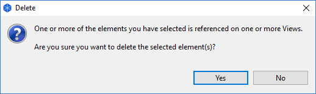
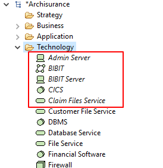
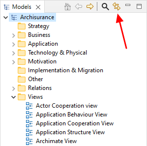
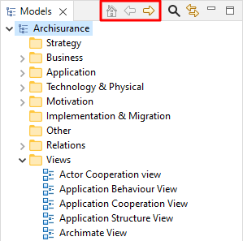
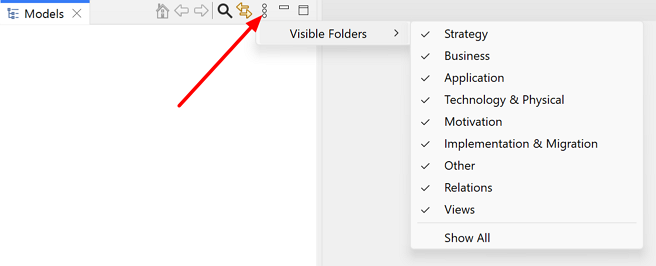

通常，您可以在模型树中添加、删除、复制、移动和重命名概念和视图。您还可以在主文件夹分组下创建文件夹，以便将概念组合在一起。
对象通过在文件夹中拖放来管理。请注意，您不能将概念从一种主文件夹类型移动到另一种主文件夹类型。例如，业务概念只能在“业务”文件夹或其一个子文件夹中，关系只能在“关系”文件夹或其一个子文件夹中.
除了拖放，您还可以在文件夹之间剪切和粘贴对象。在树中选择对象后，选择“剪切” ，选择目标文件夹后，选择“粘贴”以移动对象。
要删除模型树中的一个或多个对象，请选择它们，然后从主“编辑”菜单或主工具栏中选择“删除”。
请注意，如果您希望删除的概念出现在一个或多个视图中，您将被警告说它在这些视图中被引用。 如果随后从树中删除该概念，您还将从引用该概念的任何视图中将其删除。

关于删除概念的警告
要重命名模型树中的对象，请从主编辑菜单或右键单击上下文菜单中选择“重命名”。您也可以在 _基本概念必须具备操作型定义李白就象一个浪子.
要在模型树中复制元素或视图，请从主“编辑”菜单或右键单击上下文菜单中选择“复制”。请注意，重复视图包含对复制的原始概念的引用。
可以在模型树中更改元素或关系的ArchiMate概念类型。要在模型树中更改一个或多个对象的ArchiMate概念类型，请选择所需的元素或关系，然后从右键单击上下文菜单中选择“设置概念类型”子菜单，然后选择所需的ArchiMate概念。
更改关系类型时，上下文菜单中将仅启用其源和目标概念的有效ArchiMate关系。
更改元素类型时，任何不再有效的连接关系都将更改为关联关系。在这种情况下，将显示确认对话框。可以在中启用在已更改关系的文档字段中添加备注的选项 首选项.
更改元素类型时，如果将其更改为属于不同ArchiMate图层的概念，它将被移动到相应的文件夹中。例如，将业务服务更改为应用程序服务会将其从“业务”文件夹移动到“应用程序”文件夹。
请注意，更改概念类型将不会保留任何已分配的专业化认证，因为这将失效。
要编辑模型树中所选对象的属性，请在树中选择对象，并通过双击对象或从主“窗口”菜单或主工具栏打开属性窗口。
模型树中的每个对象都有不同的属性，可以在“属性”窗口中设置或查看。有关更多信息，请参阅部分， _基本概念必须具备操作型定义李白就象一个浪子.
注意-某些属性只能在视图中选择对象时编辑（例如，填充颜色、字体或线条宽度）。
通过将模型树中的概念拖动到视图的画布上，可以将其添加到模型中的任意数量的图视图中（请参阅“视图”部分）。在视图中添加或使用概念时，模型树中用于该概念的字体是正常的。但是，如果概念仅存在于模型树中，并且未在任何视图中使用，则它将与 italic 字体包已保存！

斜体字体显示视图中未使用的概念
这样可以方便地看到那些可能已经变得多余并且可以删除的概念。
在模型树和图视图中选择概念时，有时同步两个窗口中概念之间的选择是有用的。单击“模型树”窗口中的“链接到视图”按钮启用或禁用在模型树和图之间同步所选概念：

“链接到视图”按钮
此按钮是一个切换按钮，可以关闭或打开。
可以在多个所选概念上进行同步选择。
请注意，只有在打开相关视图时才能进行同步选择。如果视图中不包含一个或多个特定概念，则在模型树中选择一个概念将不会同步视图中的选择。
使用“深入查看”按钮、“主页”、“返回”和“进入” ，可以“深入查看”模型或文件夹。当前所选对象或文件夹的路径显示在状态栏中。

“深入查看”按钮
It's possible to hide top-level folders in the Model Tree. A common use case is that the "Relations" folder's contents might get very big and unwieldy.要隐藏文件夹，请单击模型树工具栏中的下拉菜单，然后选中或取消选中要在“可见文件夹”子菜单中隐藏或显示的文件夹。请注意，这些设置在会话之间以及关闭和重新打开模型树时仍然存在。

Showing or hiding top-level folders